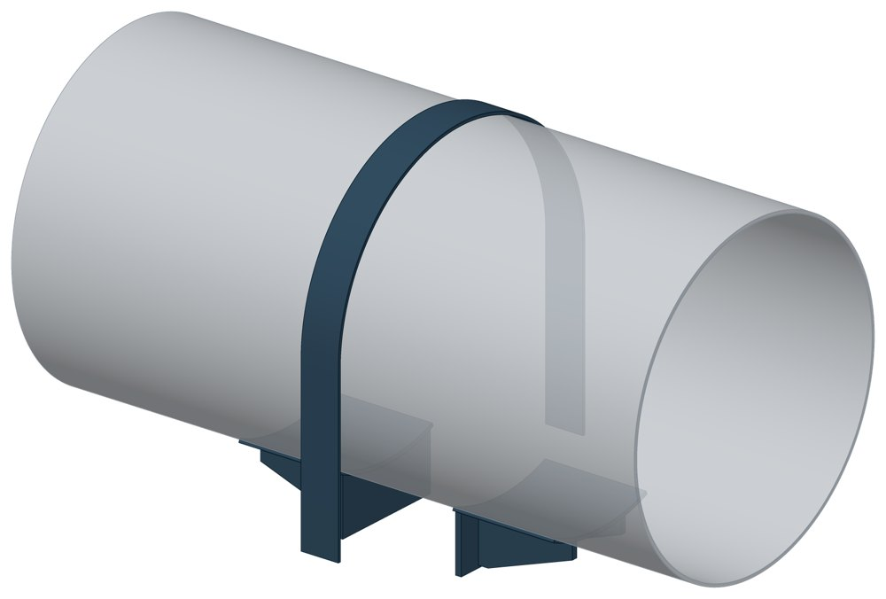
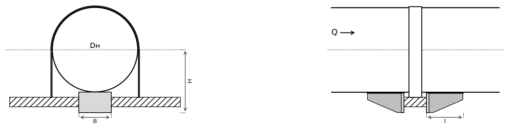

Опора неподвижная хомутовая бескорпусная ТС-669
Бескорпусная хомутовая опора: под трубой два усиленных упора по обе стороны балки, сверху трубу охватывает хомут из полосы. Упоры держат трубу от сдвига вдоль оси, хомут — от подъёма.

- Диаметр трубы Dн
- 108–1020 мм
- Документ
- Серия 5.903-13 вып. 7-95
- Исполнений
- 70
- Вертикальная P
- до 100 кН
- Осевая Q
- до 450 кН
- Масса
- 3,5–78 кг
- Сталь
- Листовые детали — Ст3сп5 ГОСТ 14637-89, хомуты из круга — сталь 20 ГОСТ 1050-88. Для холодного климата — низколегированная сталь, в том числе 09Г2С; размеры опоры при этом не меняются.
- Покрытие
- По альбому серии — окраска по грунту, кроме поверхностей под сварку. Вид покрытия согласуется при заказе.
- 3D-модели
- у всех исполнений
Применение и монтаж
Назначение: где применяется
Трубопроводы тепловых сетей Dн 108–1020 мм. Держит осевую силу Q от 25 до 450 кН и вертикальную P от 25 до 100 кН. Опирается на несущую балку под трубой.
Монтаж: как устанавливается
Упоры приваривают к трубе снизу, концы хомута — к опорной конструкции. Зазор 30 мм между трубой и балкой заполняют прокладками из листовой стали 5–10 мм; по мере осадки подвижных опор прокладки удаляют. Хомуты не должны воспринимать боковых сил.
Отличия от соседних типов
Dн до 219 мм и сила до 25 кН — простая хомутовая ТС-659. Нужна высота под изоляцию или есть боковая сила — опоры на корпусе ТС-670 (Dн до 377 мм) и ТС-671. Только боковая сила — ТС-668.
Габаритная схема ТС-669

Состав комплекта на одну опору
| Упор усиленный (плита, два ребра, подушка) | 2 шт. |
| Хомут | 1 или 2 шт. |
Таблица исполнений ТС-669
| Обозначение | Код ПРОМБУРГ | Dнмм | Стенка Sмм | PкН | QкН | Высота Нмм | Ширина упора Вмм | Длина упора Lмм | Массакг | 3D |
|---|---|---|---|---|---|---|---|---|---|---|
| ТС-669.00.00 | ПБ-669-0108-1 | 108 | 4 | 25 | 25 | 110 | 70 | 115 | 3,5 | 3D |
| ТС-669.00.00-01 | ПБ-669-0133-1 | 133 | 4 | 25 | 25 | 134 | 80 | 115 | 3,8 | 3D |
| ТС-669.00.00-02 | ПБ-669-0159-1 | 159 | 4,5 | 25 | 30 | 164 | 90 | 117 | 5,1 | 3D |
| ТС-669.00.00-03-219-6* | ПБ-669-0219-1 | 219 | 6 | 40 | 70 | 216 | 120 | 137 | 9,6 | 3D |
| ТС-669.00.00-03-219-7* | ПБ-669-0219-2 | 219 | 7 | 50 | 90 | 216 | 120 | 137 | 9,6 | 3D |
| ТС-669.00.00-04-273-7* | ПБ-669-0273-1 | 273 | 7 | 50 | 90 | 246 | 120 | 137 | 9,8 | 3D |
| ТС-669.00.00-04-273-8 | ПБ-669-0273-2 | 273 | 8 | 50 | 120 | 246 | 120 | 137 | 9,8 | 3D |
| ТС-669.00.00-05-325-7 | ПБ-669-0325-1 | 325 | 7 | 50 | 90 | 270 | 120 | 167 | 12,1 | 3D |
| ТС-669.00.00-05-325-8* | ПБ-669-0325-2 | 325 | 8 | 70 | 120 | 270 | 120 | 167 | 12,1 | 3D |
| ТС-669.00.00-06 | ПБ-669-0377-1 | 377 | 9 | 70 | 150 | 300 | 140 | 167 | 15 | 3D |
| ТС-669.00.00-07-426-7 | ПБ-669-0426-1 | 426 | 7 | 70 | 90 | 338 | 160 | 200 | 23 | 3D |
| ТС-669.00.00-07-426-9 | ПБ-669-0426-2 | 426 | 9 | 70 | 150 | 338 | 160 | 200 | 23 | 3D |
| ТС-669.00.00-08-530-7 | ПБ-669-0530-1 | 530 | 7 | 70 | 80 | 393 | 200 | 226 | 28,6 | 3D |
| ТС-669.00.00-08-530-8 | ПБ-669-0530-2 | 530 | 8 | 70 | 100 | 393 | 200 | 226 | 28,6 | 3D |
| ТС-669.00.00-08-530-9 | ПБ-669-0530-3 | 530 | 9 | 70 | 120 | 393 | 200 | 226 | 28,6 | 3D |
| ТС-669.00.00-09-630-7 | ПБ-669-0630-1 | 630 | 7 | 70 | 100 | 445 | 240 | 230 | 38,1 | 3D |
| ТС-669.00.00-09-630-9 | ПБ-669-0630-2 | 630 | 9 | 100 | 140 | 445 | 240 | 230 | 38,1 | 3D |
| ТС-669.00.00-09-630-10 | ПБ-669-0630-3 | 630 | 10 | 100 | 180 | 445 | 240 | 230 | 38,1 | 3D |
| ТС-669.00.00-09-630-11 | ПБ-669-0630-4 | 630 | 11 | 100 | 220 | 445 | 240 | 230 | 38,1 | 3D |
| ТС-669.00.00-10-720-8 | ПБ-669-0720-1 | 720 | 8 | 80 | 120 | 490 | 280 | 270 | 45,6 | 3D |
| ТС-669.00.00-10-720-10 | ПБ-669-0720-2 | 720 | 10 | 100 | 200 | 490 | 280 | 270 | 45,6 | 3D |
| ТС-669.00.00-10-720-11 | ПБ-669-0720-3 | 720 | 11 | 100 | 250 | 490 | 280 | 270 | 45,6 | 3D |
| ТС-669.00.00-10-720-12 | ПБ-669-0720-4 | 720 | 12 | 100 | 300 | 490 | 280 | 270 | 45,6 | 3D |
| ТС-669.00.00-11-820-8 | ПБ-669-0820-1 | 820 | 8 | 80 | 120 | 540 | 300 | 270 | 49 | 3D |
| ТС-669.00.00-11-820-9 | ПБ-669-0820-2 | 820 | 9 | 100 | 160 | 540 | 300 | 270 | 49 | 3D |
| ТС-669.00.00-11-820-10 | ПБ-669-0820-3 | 820 | 10 | 100 | 200 | 540 | 300 | 270 | 49 | 3D |
| ТС-669.00.00-11-820-12 | ПБ-669-0820-4 | 820 | 12 | 100 | 300 | 540 | 300 | 270 | 49 | 3D |
| ТС-669.00.00-12-920-8 | ПБ-669-0920-1 | 920 | 8 | 80 | 120 | 592 | 320 | 270 | 53,5 | 3D |
| ТС-669.00.00-12-920-9 | ПБ-669-0920-2 | 920 | 9 | 100 | 160 | 592 | 320 | 270 | 53,5 | 3D |
| ТС-669.00.00-12-920-10 | ПБ-669-0920-3 | 920 | 10 | 100 | 220 | 592 | 320 | 270 | 53,5 | 3D |
| ТС-669.00.00-12-920-12 | ПБ-669-0920-4 | 920 | 12 | 100 | 400 | 592 | 320 | 270 | 53,5 | 3D |
| ТС-669.00.00-13-1020-10 | ПБ-669-1020-1 | 1020 | 10 | 100 | 220 | 642 | 360 | 290 | 68,5 | 3D |
| ТС-669.00.00-13-1020-11 | ПБ-669-1020-2 | 1020 | 11 | 100 | 260 | 642 | 360 | 290 | 68,5 | 3D |
| ТС-669.00.00-13-1020-12 | ПБ-669-1020-3 | 1020 | 12 | 100 | 350 | 642 | 360 | 290 | 68,5 | 3D |
| ТС-669.00.00-13-1020-14 | ПБ-669-1020-4 | 1020 | 14 | 100 | 450 | 642 | 360 | 290 | 68,5 | 3D |
| ТС-669.00.00-14 | ПБ-669-0108-2 | 108 | 4 | 25 | 25 | 110 | 70 | 115 | 3,8 | 3D |
| ТС-669.00.00-15 | ПБ-669-0133-2 | 133 | 4 | 25 | 25 | 134 | 80 | 115 | 4,2 | 3D |
| ТС-669.00.00-16 | ПБ-669-0159-2 | 159 | 4,5 | 25 | 30 | 164 | 90 | 117 | 5,6 | 3D |
| ТС-669.00.00-17-219-6* | ПБ-669-0219-3 | 219 | 6 | 40 | 70 | 216 | 120 | 137 | 9,8 | 3D |
| ТС-669.00.00-17-219-7* | ПБ-669-0219-4 | 219 | 7 | 50 | 90 | 216 | 120 | 137 | 9,8 | 3D |
| ТС-669.00.00-18-273-7* | ПБ-669-0273-3 | 273 | 7 | 50 | 90 | 246 | 120 | 137 | 10 | 3D |
| ТС-669.00.00-18-273-8 | ПБ-669-0273-4 | 273 | 8 | 50 | 120 | 246 | 120 | 137 | 10 | 3D |
| ТС-669.00.00-19-325-7 | ПБ-669-0325-3 | 325 | 7 | 50 | 90 | 270 | 120 | 167 | 14,5 | 3D |
| ТС-669.00.00-19-325-8 | ПБ-669-0325-4 | 325 | 8 | 70 | 120 | 270 | 120 | 167 | 14,5 | 3D |
| ТС-669.00.00-20 | ПБ-669-0377-2 | 377 | 9 | 70 | 150 | 300 | 140 | 167 | 17,7 | 3D |
| ТС-669.00.00-21-426-7 | ПБ-669-0426-3 | 426 | 7 | 70 | 90 | 338 | 160 | 200 | 26 | 3D |
| ТС-669.00.00-21-426-9 | ПБ-669-0426-4 | 426 | 9 | 70 | 150 | 338 | 160 | 200 | 26 | 3D |
| ТС-669.00.00-22-530-7 | ПБ-669-0530-4 | 530 | 7 | 70 | 80 | 393 | 200 | 226 | 32 | 3D |
| ТС-669.00.00-22-530-8 | ПБ-669-0530-5 | 530 | 8 | 70 | 100 | 393 | 200 | 226 | 32 | 3D |
| ТС-669.00.00-22-530-9 | ПБ-669-0530-6 | 530 | 9 | 70 | 120 | 393 | 200 | 226 | 32 | 3D |
| ТС-669.00.00-23-630-7 | ПБ-669-0630-5 | 630 | 7 | 70 | 100 | 445 | 240 | 230 | 46,2 | 3D |
| ТС-669.00.00-23-630-9 | ПБ-669-0630-6 | 630 | 9 | 100 | 140 | 445 | 240 | 230 | 46,2 | 3D |
| ТС-669.00.00-23-630-10 | ПБ-669-0630-7 | 630 | 10 | 100 | 180 | 445 | 240 | 230 | 46,2 | 3D |
| ТС-669.00.00-23-630-11 | ПБ-669-0630-8 | 630 | 11 | 100 | 220 | 445 | 240 | 230 | 46,2 | 3D |
| ТС-669.00.00-24-720-8 | ПБ-669-0720-5 | 720 | 8 | 80 | 120 | 490 | 280 | 270 | 54,5 | 3D |
| ТС-669.00.00-24-720-10 | ПБ-669-0720-6 | 720 | 10 | 100 | 200 | 490 | 280 | 270 | 54,5 | 3D |
| ТС-669.00.00-24-720-11 | ПБ-669-0720-7 | 720 | 11 | 100 | 250 | 490 | 280 | 270 | 54,5 | 3D |
| ТС-669.00.00-24-720-12 | ПБ-669-0720-8 | 720 | 12 | 100 | 300 | 490 | 280 | 270 | 54,5 | 3D |
| ТС-669.00.00-25-820-8 | ПБ-669-0820-5 | 820 | 8 | 80 | 120 | 540 | 300 | 270 | 59 | 3D |
| ТС-669.00.00-25-820-9 | ПБ-669-0820-6 | 820 | 9 | 100 | 160 | 540 | 300 | 270 | 59 | 3D |
| ТС-669.00.00-25-820-10 | ПБ-669-0820-7 | 820 | 10 | 100 | 200 | 540 | 300 | 270 | 59 | 3D |
| ТС-669.00.00-25-820-12 | ПБ-669-0820-8 | 820 | 12 | 100 | 300 | 540 | 300 | 270 | 59 | 3D |
| ТС-669.00.00-26-920-8 | ПБ-669-0920-5 | 920 | 8 | 80 | 120 | 592 | 320 | 270 | 64,5 | 3D |
| ТС-669.00.00-26-920-9 | ПБ-669-0920-6 | 920 | 9 | 100 | 160 | 592 | 320 | 270 | 64,5 | 3D |
| ТС-669.00.00-26-920-10 | ПБ-669-0920-7 | 920 | 10 | 100 | 220 | 592 | 320 | 270 | 64,5 | 3D |
| ТС-669.00.00-26-920-12 | ПБ-669-0920-8 | 920 | 12 | 100 | 400 | 592 | 320 | 270 | 64,5 | 3D |
| ТС-669.00.00-27-1020-10 | ПБ-669-1020-5 | 1020 | 10 | 100 | 220 | 642 | 360 | 290 | 78 | 3D |
| ТС-669.00.00-27-1020-11 | ПБ-669-1020-6 | 1020 | 11 | 100 | 260 | 642 | 360 | 290 | 78 | 3D |
| ТС-669.00.00-27-1020-12 | ПБ-669-1020-7 | 1020 | 12 | 100 | 350 | 642 | 360 | 290 | 78 | 3D |
| ТС-669.00.00-27-1020-14 | ПБ-669-1020-8 | 1020 | 14 | 100 | 450 | 642 | 360 | 290 | 78 | 3D |
* Примечания к исполнениям:
- ТС-669.00.00-03-219-6 — Длина упора L: в альбоме 117 — сдвиг строки, принято 137
- ТС-669.00.00-03-219-7, ТС-669.00.00-17-219-7 — В альбоме для стенки 7 мм напечатано 10,0 — строки масс перепутаны; масса дана по сумме масс деталей
- ТС-669.00.00-04-273-7 — масса: 12,1 → 9,8, опечатка альбома; сумма масс деталей, решение 31 (3d/resheniya-po-albomu-5.903-13.md)
- ТС-669.00.00-05-325-8 — масса: 14 → 12,1, ошибка сайта; альбом, лист 96;
- ТС-669.00.00-17-219-6 — масса: 9,6 → 9,8, ошибка сайта; альбом, лист 96, и решение 31 (3d/resheniya-po-albomu-5.903-13.md); Длина упора L: в альбоме 117 — сдвиг строки, принято 137
- ТС-669.00.00-18-273-7 — масса: 12,1 → 10, ошибка сайта; сумма масс деталей, решение 31 (3d/resheniya-po-albomu-5.903-13.md)
Чтобы заказать, сообщите обозначение и код ПРОМБУРГ: +7 (499) 325-51-35, promburg@yandex.ru.
Нормативные документы
- Серия 5.903-13 вып. 7-95 Опоры трубопроводов неподвижные. Рабочие чертежи (PDF, 127 с.) — документ, по которому изготавливается изделие
- ГОСТ 14637-89 Прокат толстолистовой из углеродистой стали обыкновенного качества — редакция, на которую ссылается альбом серии; действующую редакцию уточняйте
- В альбоме серии — ГОСТ 1050-88; действует ГОСТ 1050-2013 Металлопродукция из нелегированных конструкционных качественных и специальных сталей. Общие технические условия
Связанные позиции
- Соседний тип: ТС-659 — неподвижная хомутовая
- Соседний тип: ТС-670 — неподвижная хомутовая с корпусом
- Парная подвижная опора: ТС-626 — скользящая хомутовая (общий диапазон Dн 108–1020)
Собрать узел с этим изделием
- Конструктор узла: собрать участок с компенсатором под свои данные труба, длина, среда, условия — состав узла и спецификация бесплатно
На трубу Dн 108–1020 мм в каталоге
Позиции каталога с исполнениями на те же наружные диаметры трубы.
Детали трубопровода
- Фланец стальной воротниковый общих Dн: 14
- Фланец стальной плоский приварной общих Dн: 14
- Отвод стальной крутоизогнутый 90° общих Dн: 13
- Отвод стальной крутоизогнутый 90°, 09Г2С общих Dн: 12
- Заглушка стальная эллиптическая общих Dн: 10
- Переход стальной концентрический общих Dн: 9
- Днище стальное эллиптическое общих Dн: 7
- Отвод нержавеющий 90° общих Dн: 1
Компенсаторы
- Компенсатор сильфонный 2СКУ.ППМ (ИЯНШ) 2СКУППМИ общих Dн: 14
- Компенсатор сильфонный КСО общих Dн: 14
- Компенсатор сильфонный КСОФ общих Dн: 14
- Компенсатор сильфонный стартовый СК общих Dн: 14
- Компенсатор сильфонный СКУ.ППМ (ИЯНШ) СКУППМИ общих Dн: 14
- Компенсатор сильфонный 2ОПКР общих Dн: 13
- Компенсатор сильфонный 2ОПКР (ИЯНШ) 2ОПКРИ общих Dн: 13
- Компенсатор сильфонный 2СКУ.М 2СКУМ общих Dн: 13
- Компенсатор сильфонный 2СКУ.М (ИЯНШ) 2СКУМИ общих Dн: 13
- Компенсатор сильфонный 2СКУ.ППУ (ИЯНШ) 2СКУППУИ общих Dн: 13
- Компенсатор сильфонный 2СКУ.ППУ/ОЦ (ИЯНШ) 2СКУППУОЦИ общих Dн: 13
- Компенсатор сильфонный КС общих Dн: 13
- Компенсатор сильфонный КСО (ИЯНШ) КСОИ общих Dн: 13
- Компенсатор сильфонный ОПКР общих Dн: 13
И ещё 20 типов — в оглавлении каталога.
Другие опоры и подвески
- Опора неподвижная двухупорная ТС-660 общих Dн: 14
- Опора неподвижная щитовая ТС-666 общих Dн: 14
- Опора скользящая хомутовая ТС-626 общих Dн: 14
- Опорные плиты диэлектрические ТС-632 общих Dн: 14
- Опоры приварные неподвижные скользящие ОПН общих Dн: 14
- Опоры сварные скользящие неподвижные и направляющие СТО 79814898-130 общих Dн: 14
- Опоры хомутовые и скользящие неподвижные и направляющие СТО 79814898-131 общих Dн: 14
- Опора приварная скользящая и неподвижная ОСТ 34-10-616-93 общих Dн: 14
- Опоры хомутовые скользящие ОСТ 34-10-617-93 общих Dн: 14
- Опоры хомутовые неподвижные ОСТ 34-10-618-93 общих Dн: 14
И ещё 96 типов — в оглавлении каталога.
Другие типы раздела
Неподвижные опоры тепловых сетей (ТС-659…ТС-671)
- Опора неподвижная хомутовая ТС-659
- Опора неподвижная двухупорная ТС-660
- Опора неподвижная четырёхупорная ТС-661
- Опора неподвижная двухупорная усиленная ТС-663
- Опора неподвижная четырёхупорная усиленная ТС-664
- Опора неподвижная двухупорная сальниковых компенсаторов ТС-665
- Опора неподвижная щитовая ТС-666
- Опора неподвижная щитовая усиленная ТС-667
- Опора неподвижная боковая ТС-668
- Опора неподвижная хомутовая с корпусом ТС-670
- Опора неподвижная бугельная с корпусом ТС-671
Частые вопросы
Чем неподвижная опора отличается от подвижной?
Неподвижная закрепляет трубу в одной точке и принимает усилия от температурного расширения, давления и трения. Подвижная держит вес трубы и даёт ей перемещаться при нагреве. Неподвижные делят трассу на участки компенсации, подвижные стоят между ними. Место и тип каждой опоры задаёт проект.
Какую неподвижную опору выбрать: хомутовую, упорную, щитовую?
Выбор идёт по расчётной осевой силе и по тому, на что опора опирается. Малый диаметр и небольшая сила — хомутовая ТС-659. Нужна высота под изоляцию — хомутовая с корпусом ТС-670 или бугельная ТС-671. Труба проходит сквозь стенку — щитовая ТС-666, при большой силе усиленная ТС-667. Упор в балку или траверсу — двух- и четырёхупорные ТС-660, ТС-661, при больших нагрузках усиленные ТС-663, ТС-664.
Зачем нужна толщина стенки трубы?
Для Dн от 426 мм в одной позиции серии есть исполнения под разные стенки: геометрия близкая, но допускаемая нагрузка другая — её ограничивают местные напряжения в стенке трубы. Без толщины стенки исполнение однозначно не определить. Пример — щитовая ТС-666 на Dн 530: 400 кН при стенке 7 мм и 550 кН при 9 мм.
Какую нагрузку выдерживает опора?
Допускаемая нагрузка задана в таблице для каждого исполнения — она в первой группе колонок каждой карточки. Хомутовая ТС-659 — осевая Q от 5 до 25 кН, щитовая ТС-666 — от 50 до 3300 кН, хомутовая с корпусом ТС-670 — Q до 380 кН и боковая T до 200 кН.
Почему часть поверхностей опоры не окрашена?
Поверхности под приварку к трубе и к несущей конструкции оставляют без краски, иначе шов получится некачественным. Их консервируют смазкой, которую снимают перед сваркой.
Неподвижную опору приваривают к строительной конструкции?
Упоры и щиты приваривают к трубе, а к несущей конструкции они прилегают свободно, без приварки — так разгружаются от крутящих моментов и опора, и конструкция. У хомутовой ТС-659 упоры приваривают к трубе, а хомут — к балке.